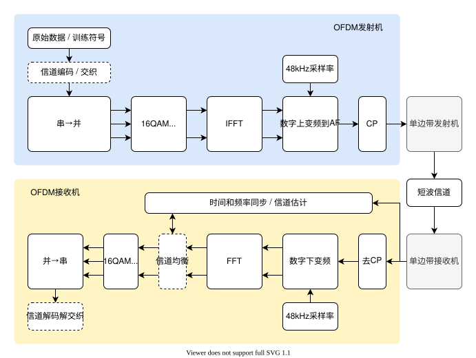

| 采样率 | -Hz |
| 载波频率 | -Hz |
| 基波频率 | -Hz |
| 符号周期 | -ms（-samp.） |
| CP周期 | -ms（-samp.） |
| 子载波数 | - |
| 占用带宽 | -Hz |
| 物理帧结构 | 22槽≈660ms：SC前导×1+训练×5+数据×16，净荷104B/帧 |
| 基带链路 | IQ混频（DDS任意载频）+×8抽取/内插→6kHz复信号+128点复FFT |
| 散布导频 | 8点/符号，频域间隔8、时域步进3（类DRM时频散布） |
| CFO/SFO补偿 | 帧头双训练符号相位差拟合+散布导频逐符号相位跟踪 |
| 符号计数 | - |
| 估计符号起点 | - |
| 误码率（本轮） | - |
